[1]:
from model import taxiway_model
from fmdtools.analyze import plot as plot
from fmdtools.sim import propagate as prop
import networkx as nx
from common import plot_tstep, plot_course
[2]:
import pandas as pd
Taxiway Model Overview
The taxiway model has three main agents: - Helicopter, which lands and takes off from a helipad - Aircraft, which lands at a runway, taxis to a gate, and takes off from a runway (and may be UAVs or Piloted Aircraft) - ATC, which coordinates operations
These agents interact via the flows: - Ground, a MultiFlow tracking the map as well as agent assignments/allocations - Location, a MultiFlow tracking the position/velocity of each route on the map, and - Requests, a CommsFlow tracking the messages sent between the ATC and the Aircraft/Helicopters
[3]:
from fmdtools.analyze.graph import ModelTypeGraph
[4]:
mdl = taxiway_model()
[5]:
tg = ModelTypeGraph(mdl)
[6]:
tg.set_edge_labels(title='')
[7]:
fig, ax = tg.draw(figsize=(6,3), withlegend=True, legend_bbox=(0, 1))
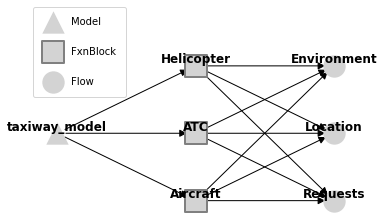
[8]:
fig.savefig("modelstructure.pdf", format="pdf", bbox_inches = 'tight', pad_inches = 0)
[9]:
mdl.flows['location']
[9]:
location Location flow: LocationState(x=30.0, y=25.0, xd=0.0, yd=0.0, speed=0.0, stage='flight', mode='standby')
ma1 Location flow: LocationState(x=10.0, y=20.0, xd=0.0, yd=0.0, speed=0.0, stage='takeoff', mode='standby')
percieved Location flow: LocationState(x=30.0, y=25.0, xd=0.0, yd=0.0, speed=0.0, stage='flight', mode='standby')
closest Location flow: LocationState(x=30.0, y=25.0, xd=0.0, yd=0.0, speed=0.0, stage='flight', mode='standby')
ma2 Location flow: LocationState(x=30.0, y=25.0, xd=0.0, yd=0.0, speed=0.0, stage='flight', mode='standby')
percieved Location flow: LocationState(x=30.0, y=25.0, xd=0.0, yd=0.0, speed=0.0, stage='flight', mode='standby')
closest Location flow: LocationState(x=30.0, y=25.0, xd=0.0, yd=0.0, speed=0.0, stage='flight', mode='standby')
ma3 Location flow: LocationState(x=30.0, y=25.0, xd=0.0, yd=0.0, speed=0.0, stage='flight', mode='standby')
percieved Location flow: LocationState(x=30.0, y=25.0, xd=0.0, yd=0.0, speed=0.0, stage='flight', mode='standby')
closest Location flow: LocationState(x=30.0, y=25.0, xd=0.0, yd=0.0, speed=0.0, stage='flight', mode='standby')
ua1 Location flow: LocationState(x=45.0, y=-5.0, xd=0.0, yd=0.0, speed=0.0, stage='park', mode='standby')
percieved Location flow: LocationState(x=30.0, y=25.0, xd=0.0, yd=0.0, speed=0.0, stage='flight', mode='standby')
closest Location flow: LocationState(x=30.0, y=25.0, xd=0.0, yd=0.0, speed=0.0, stage='flight', mode='standby')
ua2 Location flow: LocationState(x=30.0, y=25.0, xd=0.0, yd=0.0, speed=0.0, stage='flight', mode='standby')
percieved Location flow: LocationState(x=30.0, y=25.0, xd=0.0, yd=0.0, speed=0.0, stage='flight', mode='standby')
closest Location flow: LocationState(x=30.0, y=25.0, xd=0.0, yd=0.0, speed=0.0, stage='flight', mode='standby')
ua3 Location flow: LocationState(x=30.0, y=25.0, xd=0.0, yd=0.0, speed=0.0, stage='flight', mode='standby')
percieved Location flow: LocationState(x=30.0, y=25.0, xd=0.0, yd=0.0, speed=0.0, stage='flight', mode='standby')
closest Location flow: LocationState(x=30.0, y=25.0, xd=0.0, yd=0.0, speed=0.0, stage='flight', mode='standby')
h1 Location flow: LocationState(x=65.0, y=15.0, xd=0.0, yd=0.0, speed=0.0, stage='land', mode='standby')
percieved Location flow: LocationState(x=30.0, y=25.0, xd=0.0, yd=0.0, speed=0.0, stage='flight', mode='standby')
closest Location flow: LocationState(x=30.0, y=25.0, xd=0.0, yd=0.0, speed=0.0, stage='flight', mode='standby')
h2 Location flow: LocationState(x=30.0, y=25.0, xd=0.0, yd=0.0, speed=0.0, stage='flight', mode='standby')
percieved Location flow: LocationState(x=30.0, y=25.0, xd=0.0, yd=0.0, speed=0.0, stage='flight', mode='standby')
closest Location flow: LocationState(x=30.0, y=25.0, xd=0.0, yd=0.0, speed=0.0, stage='flight', mode='standby')
[10]:
mdl.flows['requests']
[10]:
requests Requests flow: RequestState(atc_com='None', asset_req='None', route=' ')
atc: atc Requests flow: RequestState(atc_com='None', asset_req='land', route=' ')
out: atc_out Requests flow: RequestState(atc_com='None', asset_req='None', route=' ')
in: {}
received: {}
h1: h1 Requests flow: RequestState(atc_com='None', asset_req='None', route=' ')
h2: h2 Requests flow: RequestState(atc_com='None', asset_req='None', route=' ')
ua1: ua1 Requests flow: RequestState(atc_com='None', asset_req='None', route=' ')
ua2: ua2 Requests flow: RequestState(atc_com='None', asset_req='None', route=' ')
ua3: ua3 Requests flow: RequestState(atc_com='None', asset_req='None', route=' ')
ma1: ma1 Requests flow: RequestState(atc_com='None', asset_req='None', route=' ')
ma2: ma2 Requests flow: RequestState(atc_com='None', asset_req='None', route=' ')
ma3: ma3 Requests flow: RequestState(atc_com='None', asset_req='None', route=' ')
ma1: ma1 Requests flow: RequestState(atc_com='None', asset_req='takeoff', route=' ')
out: ma1_out Requests flow: RequestState(atc_com='None', asset_req='None', route=' ')
in: {}
received: {}
ma2: ma2 Requests flow: RequestState(atc_com='None', asset_req='land', route=' ')
out: ma2_out Requests flow: RequestState(atc_com='None', asset_req='None', route=' ')
in: {}
received: {}
ma3: ma3 Requests flow: RequestState(atc_com='None', asset_req='land', route=' ')
out: ma3_out Requests flow: RequestState(atc_com='None', asset_req='None', route=' ')
in: {}
received: {}
ua1: ua1 Requests flow: RequestState(atc_com='None', asset_req='taxi', route=' ')
out: ua1_out Requests flow: RequestState(atc_com='None', asset_req='None', route=' ')
in: {}
received: {}
ua2: ua2 Requests flow: RequestState(atc_com='None', asset_req='land', route=' ')
out: ua2_out Requests flow: RequestState(atc_com='None', asset_req='None', route=' ')
in: {}
received: {}
ua3: ua3 Requests flow: RequestState(atc_com='None', asset_req='land', route=' ')
out: ua3_out Requests flow: RequestState(atc_com='None', asset_req='None', route=' ')
in: {}
received: {}
h1: h1 Requests flow: RequestState(atc_com='None', asset_req='taxi', route=' ')
out: h1_out Requests flow: RequestState(atc_com='None', asset_req='None', route=' ')
in: {}
received: {}
h2: h2 Requests flow: RequestState(atc_com='None', asset_req='land', route=' ')
out: h2_out Requests flow: RequestState(atc_com='None', asset_req='None', route=' ')
in: {}
received: {}
[11]:
mdl.flows['ground']
[11]:
ground Environment flow: TaxiwayStates(area_allocation={'takeoff1': {'ma1'}, 'landing1': set(), 'helipad1': {'h1'}, 'gate1': set(), 'gate2': set(), 'gate3': set(), 'gate4': set(), 'gate5': set(), 'gate6': {'ua1'}, 'air_loc': set()}, asset_area={'h1': 'helipad1', 'h2': 'air_loc', 'ua1': 'gate6', 'ua2': 'air_loc', 'ua3': 'air_loc', 'ma1': 'takeoff1', 'ma2': 'air_loc', 'ma3': 'air_loc'}, asset_assignment={'h1': 'helipad1', 'h2': 'air_loc', 'ua1': 'gate6', 'ua2': 'air_loc', 'ua3': 'air_loc', 'ma1': 'takeoff1', 'ma2': 'air_loc', 'ma3': 'air_loc'})
atc Environment flow: TaxiwayStates(area_allocation={'takeoff1': {'ma1'}, 'landing1': set(), 'helipad1': {'h1'}, 'gate1': set(), 'gate2': set(), 'gate3': set(), 'gate4': set(), 'gate5': set(), 'gate6': {'ua1'}, 'air_loc': set()}, asset_area={'h1': 'helipad1', 'h2': 'air_loc', 'ua1': 'gate6', 'ua2': 'air_loc', 'ua3': 'air_loc', 'ma1': 'takeoff1', 'ma2': 'air_loc', 'ma3': 'air_loc'}, asset_assignment={'h1': 'helipad1', 'h2': 'air_loc', 'ua1': 'gate6', 'ua2': 'air_loc', 'ua3': 'air_loc', 'ma1': 'takeoff1', 'ma2': 'air_loc', 'ma3': 'air_loc'})
Model Simulation
[12]:
fig, ax = mdl.flows['ground'].show_map()
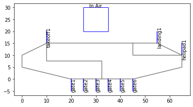
[13]:
endresults, mdlhist = prop.nominal(mdl)
[14]:
fig, ax=plot_tstep(mdl, mdlhist, 16, show_area_allocation=False, locattr="stage", title="Taxiway Activity ")
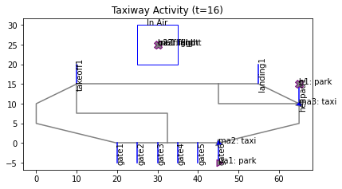
[15]:
fig.savefig("modelactivity.pdf", format="pdf", bbox_inches = 'tight', pad_inches = 0)
[16]:
fig, ax = plot_course(mdl, mdlhist, "ma2", title="One aircraft's route over time")
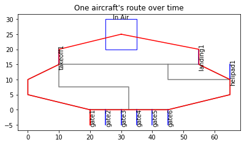
[17]:
fig.savefig("assetroute.pdf", format="pdf", bbox_inches = 'tight', pad_inches = 0)
[18]:
phasehist, modephases = mdlhist.get_modephases()
[19]:
fig = plot.phases({"ma2":phasehist["ma2"], 'h2': phasehist['h2']}, singleplot=True, modephases=modephases, figsize=(4,4),
title_padding=-0.02, title="Asset Operational Phases")
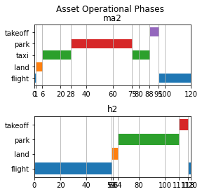
[20]:
fig.savefig("assetmodes.pdf", format="pdf", bbox_inches = 'tight', pad_inches = 0)
Fault Simulation and Analysis
Perception Fault - AC Vision Fault
[21]:
endresults, mdlhist = prop.one_fault(mdl, "ma3", "lost_sight",
desired_result={93: {"graph.flows.location":{'include_glob':False}},
110:{"graph.flows.location":{'include_glob':False}},
20:["graph"], 120:['graph', "endclass"]})
[22]:
fig, ax = plot_tstep(mdl, mdlhist.faulty, 93, locattr="stage", assets_to_label=["ma3", "ma2"], areas_to_label=[],
title="MA3 approaches MA2 with no vision cone ", show_area_allocation=False)
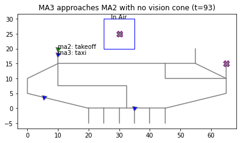
[23]:
fig.savefig("ac_vision_map.pdf", format="pdf", bbox_inches = 'tight', pad_inches = 0)
[24]:
endresults.t120p0.endclass #table should also include local, global metrics
[24]:
num_cycled: 4
perc_cycled: 0.5
num_crashed: 2
[25]:
endresults.t93p0.graph.flows.location
endresults.t93p0.graph.flows.location.set_edge_labels(title="")
[26]:
#%matplotlib qt
#endresults.t93p0.graph.flows.location.move_nodes()
[27]:
%matplotlib inline
[28]:
pos = {'ma1': [-0.51, -0.08], 'ma1_percieved': [-0.88, 0.03],
'ma1_closest': [-0.3, 0.12], 'ma2': [-0.66, 0.59],
'ma2_percieved': [-0.81, 0.84], 'ma2_closest': [-0.67, 0.26],
'ma3': [0.77, 0.49], 'ma3_percieved': [0.81, 0.83],
'ma3_closest': [0.51, 0.28], 'ua1': [0.0, 0.62],
'ua1_percieved': [0.0, 0.91], 'ua1_closest': [-0.02, 0.34],
'ua2': [0.02, -0.64], 'ua2_percieved': [0.0, -0.88],
'ua2_closest': [0.04, -0.38], 'ua3': [0.66, -0.48],
'ua3_percieved': [0.8, -0.84], 'ua3_closest': [0.42, -0.23],
'h1': [0.64, 0.11], 'h1_percieved': [0.93, -0.15],
'h1_closest': [0.3, 0.07], 'h2': [-0.69, -0.52],
'h2_percieved': [-0.79, -0.85], 'h2_closest': [-0.45, -0.32]}
endresults.t93p0.graph.flows.location.set_pos(**pos)
[29]:
fig, ax = endresults.t93p0.graph.flows.location.draw(figsize=(6,6), title="t=93", legend_bbox=(0.85,0.65))
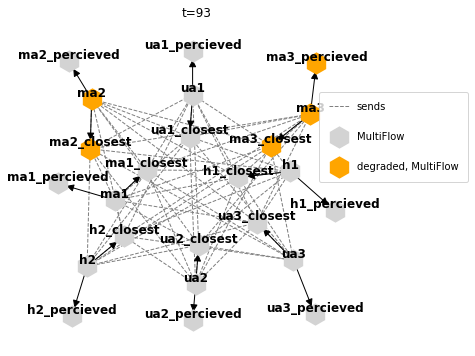
[30]:
fig.savefig("ac_loc_93.pdf", format="pdf", bbox_inches = 'tight', pad_inches = 0)
[31]:
#%matplotlib qt
#endresults.t120p0.graph.move_nodes()
[32]:
%matplotlib inline
[33]:
pos = {'atc': [-1.0, -0.15], 'ma1': [-0.86, 0.52], 'ma2': [-0.33, 0.95],
'ma3': [0.62, -0.78], 'ua1': [-0.66, -0.76], 'ua2': [0.36, 0.94],
'ua3': [-0.02, -1.0], 'h1': [0.89, 0.48], 'h2': [1.0, -0.2],
'ground': [0.31, -0.26], 'location': [-0.31, -0.24], 'requests': [-0.01, 0.43]}
endresults.t120p0.graph.set_pos(**pos)
[34]:
endresults.t120p0.graph.set_edge_labels(title="")
endresults.t120p0.graph.set_node_styles(label=dict(FxnBlock=dict(node_size=2000),
MultiFlow=dict(node_size=2000),
CommsFlow=dict(node_size=2000)),
degraded={}, faulty={})
[39]:
fig, ax = endresults.t120p0.graph.draw(figsize=(5,5), withlegend=False)
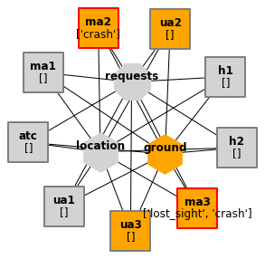
[40]:
fig.savefig("ac_faultprop_120.pdf", format="pdf", bbox_inches = 'tight', pad_inches = 0)
[41]:
import numpy as np
[42]:
perc_cycled_nom = mdlhist.nominal.get_metric('cycled', metric=np.mean, axis=0)
perc_cycled = mdlhist.faulty.get_metric('cycled', metric=np.mean, axis=0)
[43]:
perc_degraded = mdlhist.get_degraded_hist(*mdlhist.nominal.flows.keys())['total']/len(mdlhist.nominal.flows.keys())
[44]:
perc_faulty = mdlhist.get_faulty_hist(*mdl.fxns)['total']/len(mdl.fxns)
perc_faulty
[44]:
array([0. , 0.11111111, 0.11111111, 0.11111111, 0.11111111,
0.11111111, 0.11111111, 0.11111111, 0.11111111, 0.11111111,
0.11111111, 0.11111111, 0.11111111, 0.11111111, 0.11111111,
0.11111111, 0.11111111, 0.11111111, 0.11111111, 0.11111111,
0.11111111, 0.11111111, 0.11111111, 0.11111111, 0.11111111,
0.11111111, 0.11111111, 0.11111111, 0.11111111, 0.11111111,
0.11111111, 0.11111111, 0.11111111, 0.11111111, 0.11111111,
0.11111111, 0.11111111, 0.11111111, 0.11111111, 0.11111111,
0.11111111, 0.11111111, 0.11111111, 0.11111111, 0.11111111,
0.11111111, 0.11111111, 0.11111111, 0.11111111, 0.11111111,
0.11111111, 0.11111111, 0.11111111, 0.11111111, 0.11111111,
0.11111111, 0.11111111, 0.11111111, 0.11111111, 0.11111111,
0.11111111, 0.11111111, 0.11111111, 0.11111111, 0.11111111,
0.11111111, 0.11111111, 0.11111111, 0.11111111, 0.11111111,
0.11111111, 0.11111111, 0.11111111, 0.11111111, 0.11111111,
0.11111111, 0.11111111, 0.11111111, 0.11111111, 0.11111111,
0.11111111, 0.11111111, 0.11111111, 0.11111111, 0.11111111,
0.11111111, 0.11111111, 0.11111111, 0.11111111, 0.11111111,
0.11111111, 0.11111111, 0.11111111, 0.11111111, 0.11111111,
0.22222222, 0.22222222, 0.22222222, 0.22222222, 0.22222222,
0.22222222, 0.22222222, 0.22222222, 0.22222222, 0.22222222,
0.22222222, 0.22222222, 0.22222222, 0.22222222, 0.22222222,
0.22222222, 0.22222222, 0.22222222, 0.22222222, 0.22222222,
0.22222222, 0.22222222, 0.22222222, 0.22222222, 0.22222222,
0.22222222])
[45]:
from analyze.result import Result, History
[46]:
reshist = History({"nominal.cycled_assets":100*perc_cycled_nom,
"nominal.degraded_fields":0*perc_degraded,
"nominal.faulty_assets": 0*perc_faulty,
"nominal.time":mdlhist.faulty.time,
"faulty.cycled_assets":100*perc_cycled,
"faulty.degraded_fields":100*perc_degraded,
"faulty.faulty_assets":100*perc_faulty,
"faulty.time":mdlhist.faulty.time})
[47]:
reshist
[47]:
nominal.cycled_assets: array(121)
nominal.degraded_fields: array(121)
nominal.faulty_assets: array(121)
nominal.time: array(121)
faulty.cycled_assets: array(121)
faulty.degraded_fields: array(121)
faulty.faulty_assets: array(121)
faulty.time: array(121)
[48]:
fig, ax = plot.hist(reshist, 'cycled_assets',
'degraded_fields',
'faulty_assets',
time_slice=[0,93], time_slice_label = "fault injection/occurence",
ylabels={'cycled_assets':'%','degraded_fields':'%','faulty_assets':'%'})
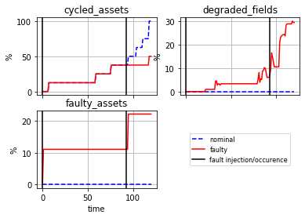
[49]:
fig.savefig("fault_history_ac_vision.pdf", format="pdf", bbox_inches = 'tight', pad_inches = 0)
[50]:
tab_dict = {"cycled assets (%)":[100*perc_cycled[-1]],
"degraded fields (%)":[100*perc_degraded[-1]],
"faulty assets (%)":[100*perc_faulty[-1]]}
[51]:
final_res = pd.DataFrame.from_dict(tab_dict)
final_res
[51]:
| cycled assets (%) | degraded fields (%) | faulty assets (%) | |
|---|---|---|---|
| 0 | 50.0 | 29.518072 | 22.222222 |
[52]:
print(final_res.to_latex())
\begin{tabular}{lrrr}
\toprule
{} & cycled assets (\%) & degraded fields (\%) & faulty assets (\%) \\
\midrule
0 & 50.0 & 29.518072 & 22.222222 \\
\bottomrule
\end{tabular}
Communications Fault - Poor land command by ATC
[53]:
from fmdtools.analyze.graph import MultiFlowGraph, CommsFlowGraph
ground_args = {'include_glob':True, "include_states":True,
'send_connections':{"asset_area":"asset_area",
"area_allocation":"area_allocation",
"asset_assignment":"asset_assignment"}}
req_args = {'include_glob':False, "ports_only":True}
endresults, mdlhist = prop.mult_fault(mdl, {8:{"atc":["wrong_land_command"]},10:{"ua2":["lost_sight"]}}, {},
desired_result={10:{"graph.flows.requests":(CommsFlowGraph, req_args)},
11:{"graph.flows.requests":(CommsFlowGraph, req_args),
"graph.flows.ground":(MultiFlowGraph, ground_args)},
19:{"graph.flows.requests":{'include_glob':False, "ports_only":True}},
20:["graph"], 120:"endclass"})
[54]:
fig, ax = plot_tstep(mdl, mdlhist.faulty, 19, title="Aircraft crashed", areas_to_label=[])
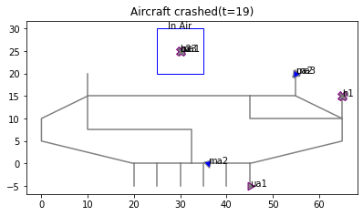
[55]:
fig.savefig("atc_comms_map.pdf", format="pdf", bbox_inches = 'tight', pad_inches = 0)
[56]:
endresults.t120p0.endclass
[56]:
num_cycled: 5
perc_cycled: 0.625
num_crashed: 2
[57]:
endresults.t11p0.graph.flows.ground
[57]:
<fmdtools.analyze.graph.MultiFlowGraph at 0x2b90b4ccf40>
[58]:
import networkx as nx
[59]:
pos = nx.spring_layout(nx.MultiGraph(endresults.t11p0.graph.flows.ground.g))
endresults.t11p0.graph.flows.ground.set_pos(**pos)
endresults.t11p0.graph.flows.ground.set_node_labels(title="last", subtext="label")
endresults.t11p0.graph.flows.ground.set_edge_labels(title="")
endresults.t11p0.graph.flows.ground.set_node_styles(label={'State':dict(node_size=800),
'MultiFlow':dict(node_size=800)},
degraded={}, faulty={})
[66]:
fig, ax = endresults.t11p0.graph.flows.ground.draw(figsize=(5,5), legend_bbox=(0.65, 0.27), legend_labelspacing=3)
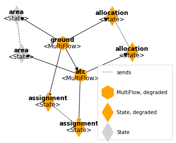
[67]:
fig.savefig("atc_comms_ground_11.pdf", format="pdf", bbox_inches = 'tight', pad_inches = 0)
[68]:
pos = nx.spring_layout(nx.MultiGraph(endresults.t10p0.graph.flows.requests.g), iterations=500)
endresults.t10p0.graph.flows.requests.set_pos(**pos)
[69]:
endresults.t10p0.graph.flows.requests.set_edge_labels(title="")
endresults.t10p0.graph.flows.requests.set_node_styles(label={'CommsFlow':dict(node_size=900)},
degraded={}, faulty={})
[72]:
fig, ax = endresults.t10p0.graph.flows.requests.draw(figsize=(10,10), legend_bbox=(0.7,0.5))
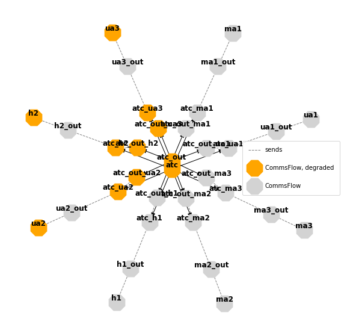
[73]:
fig.savefig("atc_comms_requests_10.pdf", format="pdf", bbox_inches = 'tight', pad_inches = 0)
[80]:
pos = {'atc': [-1.0, -0.22], 'ma1': [-0.86, 0.52], 'ma2': [-0.33, 0.95],
'ma3': [0.62, -0.78], 'ua1': [-0.66, -0.76], 'ua2': [0.36, 0.94],
'ua3': [-0.02, -1.0], 'h1': [0.89, 0.48], 'h2': [1.0, -0.2],
'ground': [0.31, -0.26], 'location': [-0.31, -0.24], 'requests': [-0.01, 0.43]}
endresults.t20p0.graph.set_pos(**pos)
endresults.t20p0.graph.set_edge_labels(title="")
endresults.t20p0.graph.set_node_styles(label=dict(FxnBlock=dict(node_size=2000),
MultiFlow=dict(node_size=2000),
CommsFlow=dict(node_size=2000)),
degraded={}, faulty={})
[81]:
fig, ax = endresults.t20p0.graph.draw(withlegend=False, figsize=(5,5))
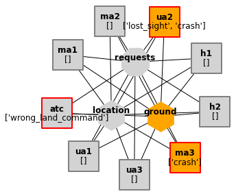
[82]:
fig.savefig("atc_comms_resgraph.pdf", format="pdf", bbox_inches = 'tight', pad_inches = 0)
[92]:
dot = endresults.t20p0.graph.draw_graphviz(layout="neato")
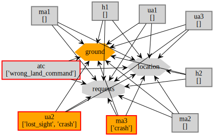
[83]:
perc_cycled_nom = mdlhist.nominal.get_metric('cycled', metric=np.mean, axis=0)
perc_cycled = mdlhist.faulty.get_metric('cycled', metric=np.mean, axis=0)
perc_degraded = mdlhist.get_degraded_hist(*mdlhist.nominal.flows.keys())['total']/len(mdlhist.nominal.flows.keys())
perc_faulty = mdlhist.get_faulty_hist(*mdl.fxns)['total']/len(mdl.fxns)
perc_faulty
[83]:
array([0. , 0. , 0. , 0. , 0. ,
0. , 0. , 0. , 0.11111111, 0.11111111,
0.22222222, 0.22222222, 0.22222222, 0.33333333, 0.33333333,
0.33333333, 0.33333333, 0.33333333, 0.33333333, 0.33333333,
0.33333333, 0.33333333, 0.33333333, 0.33333333, 0.33333333,
0.33333333, 0.33333333, 0.33333333, 0.33333333, 0.33333333,
0.33333333, 0.33333333, 0.33333333, 0.33333333, 0.33333333,
0.33333333, 0.33333333, 0.33333333, 0.33333333, 0.33333333,
0.33333333, 0.33333333, 0.33333333, 0.33333333, 0.33333333,
0.33333333, 0.33333333, 0.33333333, 0.33333333, 0.33333333,
0.33333333, 0.33333333, 0.33333333, 0.33333333, 0.33333333,
0.33333333, 0.33333333, 0.33333333, 0.33333333, 0.33333333,
0.33333333, 0.33333333, 0.33333333, 0.33333333, 0.33333333,
0.33333333, 0.33333333, 0.33333333, 0.33333333, 0.33333333,
0.33333333, 0.33333333, 0.33333333, 0.33333333, 0.33333333,
0.33333333, 0.33333333, 0.33333333, 0.33333333, 0.33333333,
0.33333333, 0.33333333, 0.33333333, 0.33333333, 0.33333333,
0.33333333, 0.33333333, 0.33333333, 0.33333333, 0.33333333,
0.33333333, 0.33333333, 0.33333333, 0.33333333, 0.33333333,
0.33333333, 0.33333333, 0.33333333, 0.33333333, 0.33333333,
0.33333333, 0.33333333, 0.33333333, 0.33333333, 0.33333333,
0.33333333, 0.33333333, 0.33333333, 0.33333333, 0.33333333,
0.33333333, 0.33333333, 0.33333333, 0.33333333, 0.33333333,
0.33333333, 0.33333333, 0.33333333, 0.33333333, 0.33333333,
0.33333333])
[84]:
reshist = History({"nominal.cycled_assets":100*perc_cycled_nom,
"nominal.degraded_fields":0*perc_degraded,
"nominal.faulty_assets": 0*perc_faulty,
"nominal.time":mdlhist.faulty.time,
"faulty.cycled_assets":100*perc_cycled,
"faulty.degraded_fields":100*perc_degraded,
"faulty.faulty_assets":100*perc_faulty,
"faulty.time":mdlhist.faulty.time})
[85]:
fig, ax = plot.hist(reshist, 'cycled_assets',
'degraded_fields',
'faulty_assets',
time_slice=[8, 10], time_slice_label = "fault injection/occurence",
ylabels={'cycled_assets':'%','degraded_fields':'%','faulty_assets':'%'})
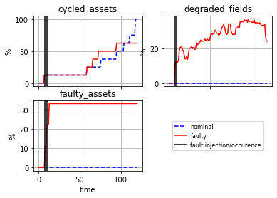
[86]:
fig.savefig("fault_history_atc_comms.pdf", format="pdf", bbox_inches = 'tight', pad_inches = 0)
[87]:
tab_dict = {"cycled assets (%)":[100*perc_cycled[-1]],
"degraded fields (%)":[100*perc_degraded[-1]],
"faulty assets (%)":[100*perc_faulty[-1]]}
[88]:
final_res = pd.DataFrame.from_dict(tab_dict)
final_res
[88]:
| cycled assets (%) | degraded fields (%) | faulty assets (%) | |
|---|---|---|---|
| 0 | 62.5 | 24.096386 | 33.333333 |
[89]:
print(final_res.to_latex())
\begin{tabular}{lrrr}
\toprule
{} & cycled assets (\%) & degraded fields (\%) & faulty assets (\%) \\
\midrule
0 & 62.5 & 24.096386 & 33.333333 \\
\bottomrule
\end{tabular}
[ ]: